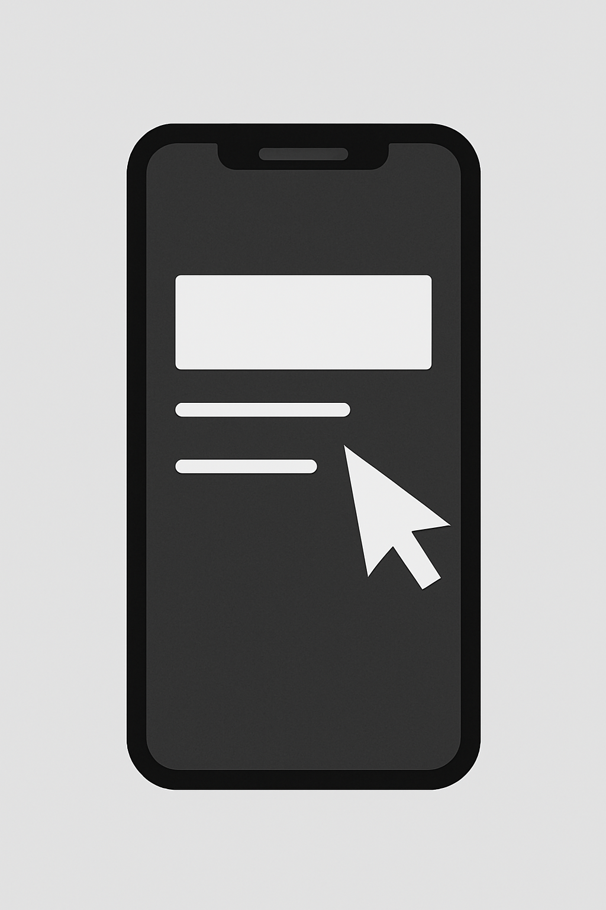

- Open your email in Outlook, Gmail or another service and select the message with the PDF.
- Hover your mouse over the attachment and click the download arrow; the file saves to your Downloads folder or desktop.
- Open the saved PDF from File Explorer and type your information into the fields.
- In Adobe Acrobat Reader, click Fill & Sign, choose "Sign" > "Add Signature".
- Type or draw your signature, click Apply and drag it to the correct spot.
- Save the completed PDF and attach it to your reply email.
Using Windows
